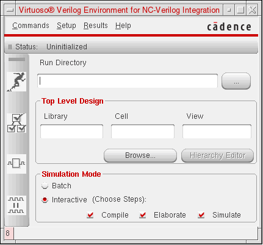
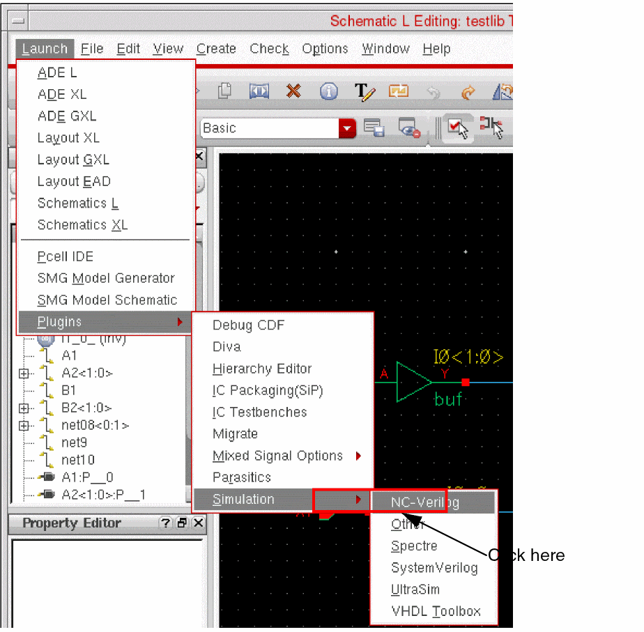
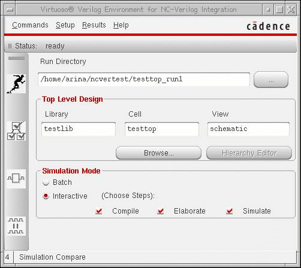

1
About the NC-Verilog Integration Environment
This chapter describes the following:
- NC-Verilog Integration Tools
- Entering the Environment
- Main NC-Verilog Window
- SimVision Window
- SimCompare
- Managing the Run Directory
- Using Command Line Interface
NC-Verilog Integration Tools
The NC-Verilog Integration Environment consists of the following:
-
The Virtuoso® Verilog Environment for the NC-Verilog Integration window (main NC-Verilog window)
The main NC-Verilog window appears when you first access the NC-Verilog Integration Environment. The main NC-Verilog window provides access to simulation commands, command forms, and support tools. -
The SimVision window
The SimVision window, which you launch from the main NC-Verilog window, is used to interactively simulate and debug the design. You use the SimVision window to directly interact with the simulator. You can open a database, trace signals, set breakpoints, observe signals, and perform many other functions to verify your design. -
The SimCompare tool
The SimCompare tool is used by NC-Verilog in background to compare the results obtained from different simulations. It is invoked when you select Simulation Compare option from the Fixed Menu. SimCompare provides a text description of any differences found.
Entering the Environment
The NC-Verilog Integration Environment for simulating and debugging mixed-level logic designs integrates with
The procedures described in this section show you how to enter the NC-Verilog Integration Environment and how to access the main NC-Verilog window. This main window provides access to the commands, forms, and tools you use to simulate and debug mixed-level designs.
You can enter the NC-Verilog Integration Environment from the following:
Entering the Environment from CIW
Use the following procedure to enter the NC-Verilog Integration Environment from the CIW:
-
Choose Tools – NC-Verilog.
The Virtuoso® Verilog Environment for NC-Verilog Integration window appears.

You now have access to the commands, forms, and tools that you need to simulate your design.
Entering the Environment from a Schematic View
Use the following procedure to enter the NC-Verilog Integration Environment from a schematic editor window.
-
Choose Launch – Plugins – Simulation – NC-Verilog.
The Virtuoso® Verilog Environment for NC-Verilog Integration window appears.

You now have access to the commands, forms, and tools that you need to simulate your design.
Main NC-Verilog Window
The Virtuoso® Verilog Environment for NC-Verilog Integration window appears when you first access the NC-Verilog Integration Environment. The main NC-Verilog window provides access to simulation commands, command forms, and support tools. The following figure shows the main NC-Verilog window:
The main NC-Verilog window sections include the Status line, Menu banner, Fixed menu, Run Directory field, Top Level Design selection fields, library browsing button, Hierarchy Editing button and Simulate Options buttons.
SimVision Window
The SimVision window is invoked when you perform an interactive simulation. In an interactive simulation, you can select the option to compile, elaborate and simulate the design from the main NC-Verilog window. When you select all the three options, the system invokes the Console - SimVision and Design Browser SimVision windows upon successfully compiling and elaborating the design.
The Simcontrol tool is part of the Cadence® SimVision Analysis environment which is a unified graphical debug environment for Cadence simulators. For more information on the SimControl user interface, refer to the Cadence® SimVision Analysis Environment User Guide.
SimCompare
SimCompare is a comprehensive tool for comparing simulation results. NC-Verilog makes use of this tool to perform comparison of simulation results. It is invoked in the background when you select the Simulation Compare option from the Fixed Menu. You can also invoke the SimCompare tool from the Commands Menu in the main NC-Verilog window.
SimCompare provides a text view of any differences found when the simulation results are compared. It accepts databases in either SST2 or VCD format. For more information on using the SimCompare tool, refer to the SimCompare User Guide.
Managing the Run Directory
The run directory is the directory in which you and the system create and store files during the simulation process. For example, the run directory is where you create the stimulus (
Test Fixture Files
In the NC-Verilog Integration Environment, a test fixture provides the stimulus that drives the simulation.
Refer to Chapter 6, “Working with the Stimulus”for detailed information on test fixtures.
Using Command Line Interface
In NC-Verilog Integration Environment, you can generate a netlist in a standalone mode using command line options. To generate a netlist, you should do the following:
-
Create the
si.envfile in the run directory and add verilog netlister variables to the file. For information on the variables that the Verilog netlister uses while netlisting a design, refer to Netlist Setup Form. -
Run the following si command, which represents an OSS binary file, to generate a netlist:
si <runDirname> -batch -command netlist -cdslib cds.lib
The command line options used with this command are:-
si: Represents the OSS binary file. -
runDirname: name of the run directory. -
-batch: Refers to the batch simulation mode. -
-command: Specifies the command to generate a netlist. -
-loadLocal: Loads thesi.localfile from the simulation run directory. -
-cdslib: Specifies the cds.lib library, which defines the design libraries and the path to these libraries. You are required to specify the complete path of the cds.lib library while executing this command.
-
Queuing Verilog Netlist Processes
When you use the command line interface, you can configure the environment to queue Verilog netlist processes when all the available licenses are being used. You use a license checking utility to queue Verilog netlist processes.
To enable the license checking utility:
To enable the license checking utility when licenses are on multiple servers:
The license checking utility waits for a minimum of ten minutes before checking the availability of licenses for queued processes. The process remains in queue only during the wait period. You can increase this wait period.
To increase the wait period of the license checking utility:
-
Set the environment variable
CDS_LIC_QUEUE_MAXTIME_INTto the wait period. For example, to increase the wait period to 15 minutes, set the environment variable to 15.
setenv CDS_LIC_QUEUE_MAXTIME_INT 15
CDS_LIC_QUEUE_MAXTIME_INT to a value less than ten, the license checking utility still waits for ten minutes, and not to the set value. The license checking utility displays the following message every minute, till a license becomes available or the wait period is complete.
Waiting for license feature 21400...
The utility displays the following message when the wait period is over and if during this period no license became available to a process. After the wait period, the process is no longer in the queue.
Max Queue wait time reached for license feature 21400
Return to top